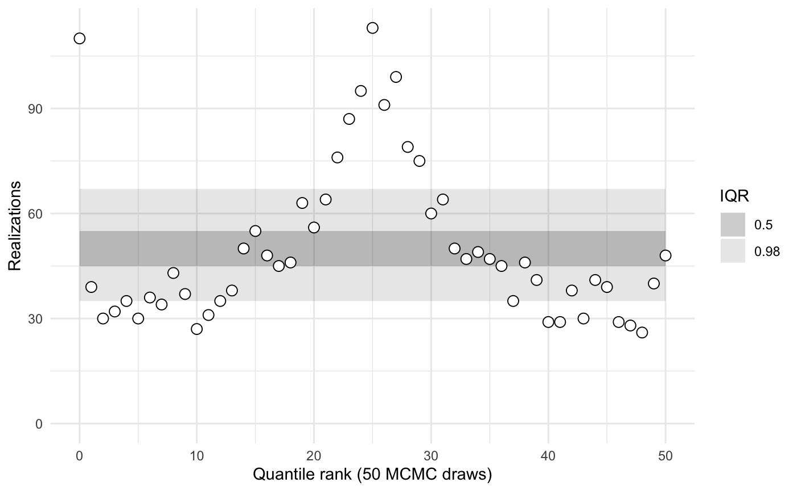
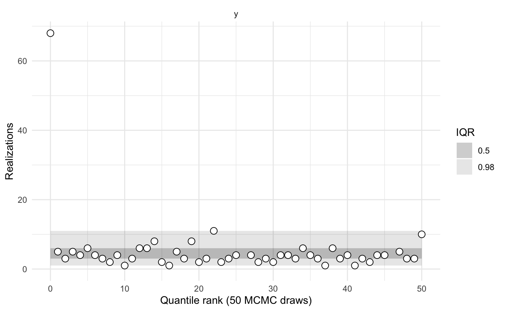
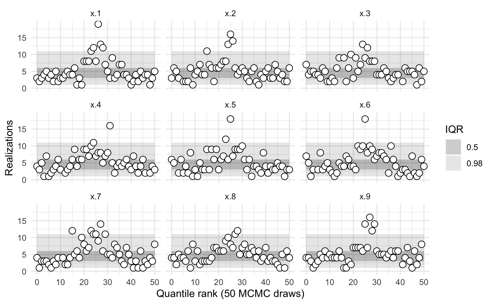
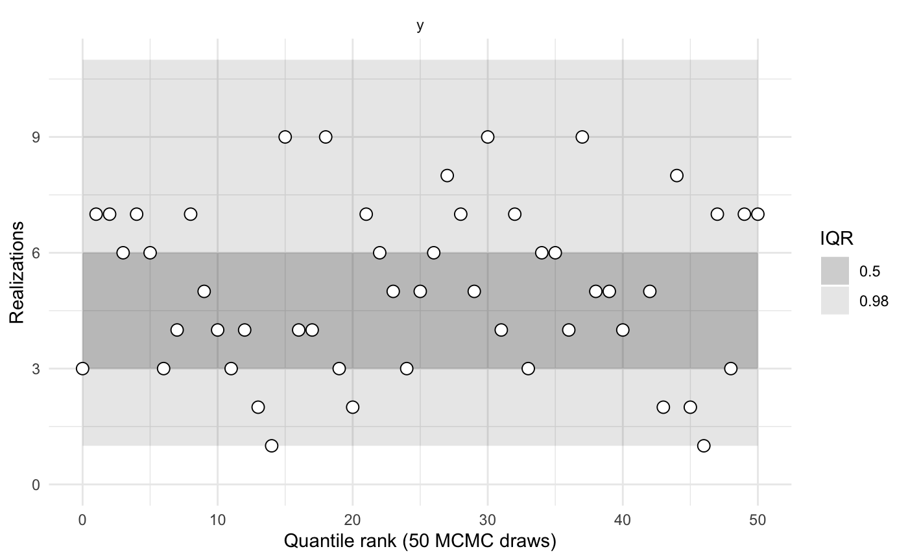
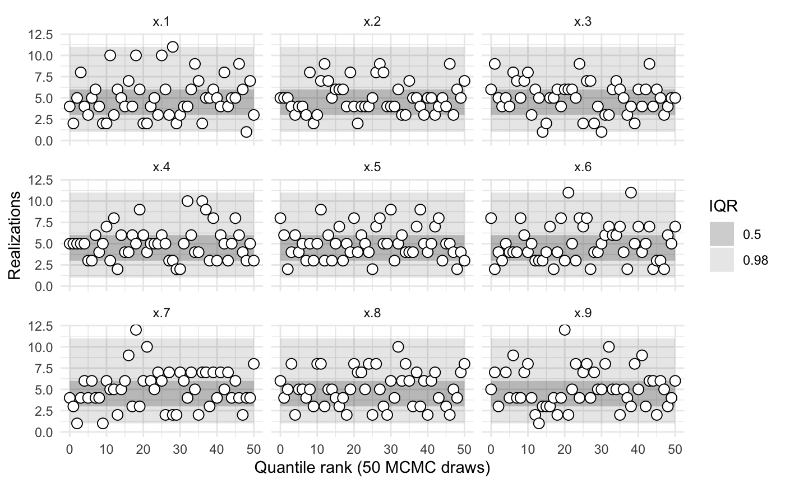

library(sbcrs)
library(rstan)
#> Loading required package: StanHeaders
#> Loading required package: ggplot2
#> rstan (Version 2.19.2, GitRev: 2e1f913d3ca3)
#> For execution on a local, multicore CPU with excess RAM we recommend calling
#> options(mc.cores = parallel::detectCores()).
#> To avoid recompilation of unchanged Stan programs, we recommend calling
#> rstan_options(auto_write = TRUE)In this example, we will calibrate two versions of Neal’s funnel.1
\[ p(y,x) = \mathsf{normal}(y|0,3) * \prod_{n=1}^9 \mathsf{normal}(x_n|0,\exp(y/2)) \]
When parameterized in terms of \(x_n\) and \(y\), this model is extremely difficult for Stan to sample from. Per the Stan User’s Guide: “The probability contours are shaped like ten-dimensional funnels. The funnel’s neck is particularly sharp because of the exponential function applied to \(y\).” Ideally, simulation-based calibration should detect the sampling pathologies in this model.
The stan code for this model (without re-parameterization) is:
parameters {
real y;
vector[9] x;
}
model {
y ~ normal(0, 3);
x ~ normal(0, exp(y/2));
}Compile the Stan model:
Create an SBC object called sbc1 with functions to: 1) generate simulated values of x and y, and 2) call rstan::sampling, passing in funnel as the model to be sampled.
sbc1 <- SBC$new(
params = function(seed, data) {
set.seed(seed + 10)
y <- rnorm(1, 0, 3)
x <- rnorm(9, 0, exp(y/2))
list(y = y, x = x)
},
sampling = function(seed, data, params, modeled_data, iters) {
sampling(funnel, data = data, seed = seed, chains = 1, iter = 2 * iters, warmup = iters)
})Calibration involves generating data and parameters, and sampling from a Stan model many times. To speed up this process, take advantage of all of your machine’s cores.
Perform the calibration.



sbc1$summary()
#>
#>
#> iq expected.outside actual.outside
#> 0.50 0.50 0.7647059
#> 0.98 0.02 0.4117647The model is evidently poorly conditioned.
The reparameterized model is based on new primitives: x_raw and y_raw, which follow independent, standard normal distributions. From these newly defined primitives, it then builds up x and y based on their analytical definitions (see above). The stan code for the reparameterized model is:
parameters {
real y_raw;
vector[9] x_raw;
}
transformed parameters {
real y;
vector[9] x;
y = 3.0 * y_raw;
x = exp(y/2) * x_raw;
}
model {
y_raw ~ std_normal(); // implies y ~ normal(0, 3)
x_raw ~ std_normal(); // implies x ~ normal(0, exp(y/2))
}Compile the (reparameterized) Stan model:
funnel_reparameterized <- stan_model(file = system.file('stan', 'funnel_reparameterized.stan', package = 'sbcrs'))Create an SBC object called sbc2a with functions to: 1) generate simulated values of x_raw and y_raw, and 2) call rstan::sampling, passing in funnel_reparameterized as the model to be sampled.
sbc2a <- SBC$new(
params = function(seed, data) {
set.seed(seed + 10)
y_raw <- rnorm(1, 0, 1)
x_raw <- rnorm(9, 0, 1)
list(y_raw = y_raw, x_raw = x_raw)
},
sampling = function(seed, data, params, modeled_data, iters) {
sampling(funnel_reparameterized, data = data, seed = seed, chains = 1, iter = 2 * iters, warmup = iters)
})Perform the calibration.


sbc2a$summary()
#>
#>
#> iq expected.outside actual.outside
#> 0.50 0.50 0.4313725
#> 0.98 0.02 0.0000000Rather than comparing simulated and sampled values of x_raw and y_raw, we might instead wish to compare x and y. In the code that creates the object sbc2b, note that the params() function returns a list with named values x and y. Hence the calibration is performed on those parameters.
sbc2b <- SBC$new(
params = function(seed, data) {
set.seed(seed + 10)
y_raw <- rnorm(1, 0, 1)
x_raw <- rnorm(9, 0, 1)
y <- 3.0 * y_raw;
x <- exp(y/2) * x_raw;
list(x = x, y = y)
},
sampling = function(seed, data, params, modeled_data, iters) {
sampling(funnel_reparameterized, data = data, seed = seed, chains = 1, iter = 2 * iters, warmup = iters)
})Perform the calibration.



sbc2b$summary()
#>
#>
#> iq expected.outside actual.outside
#> 0.50 0.50 0.3921569
#> 0.98 0.02 0.0000000Both versions of the model are from https://mc-stan.org/docs/2_20/stan-users-guide/reparameterization-section.html↩